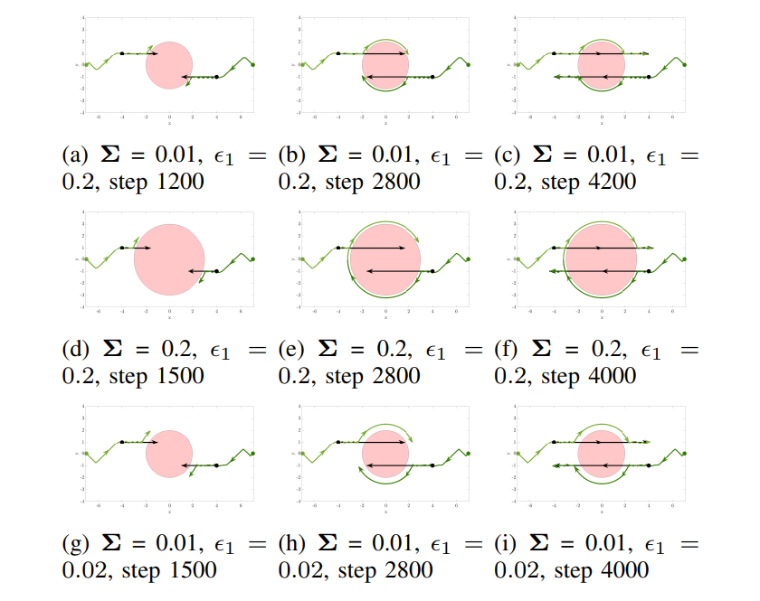
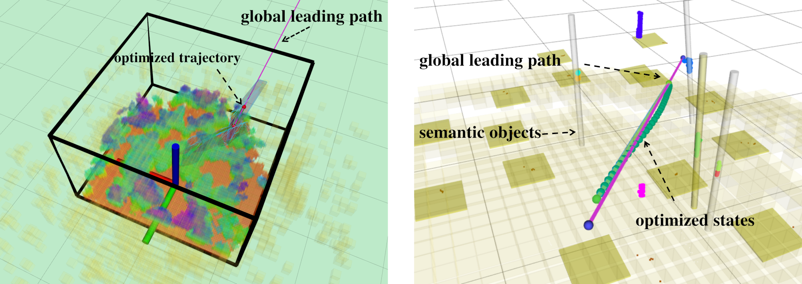

Publications
Journal Papers
- [J5] Yuwei Wu, Igor Spasojevic, Pratik Chaudhari, Vijay Kumar, "Towards Optimizing a Convex Cover of Collision-Free Space for Trajectory Generation," in IEEE Robotics and Automation Letters (RA-L), 2025, to appear [Preprint],
- [J3] Han, Zhichao*, Yuwei Wu*, Tong Li, Lu Zhang, Liuao Pei, Long Xu, Chengyang Li et al. "An efficient spatial-temporal trajectory planner for autonomous vehicles in unstructured environments." in IEEE Transactions on Intelligent Transportation Systems (T-ITS), vol. 25, no. 2, pp. 1797-1814, Feb. 2024 [Paper], [Code]

- [J2] Ankit Prabhu, Xu Liu, Igor Spasojevic, Yuwei Wu, Yifei Shao, Dexter Ong, Jiuzhou Lei, Patrick Corey Green, Pratik Chaudhari, Vijay Kumar, "UAVs for forestry: Metric-semantic mapping and diameter estimation with autonomous aerial robots." Mechanical Systems and Signal Processing 208 (2024): 111050. [Paper]
Conference Papers
- [C5] Songhao Huang*, Yuwei Wu*, Yuezhan Tao, Vijay Kumar "Safe Interval Motion Planning for Quadrotors in Dynamic Environments." 2025 IEEE International Conference on Robotics and Automation (ICRA), to appear [Preprint]
- [C4] Yuwei Wu, Yuezhan Tao, Igor Spasojevic, and Vijay Kumar. "Trajectory Optimization with Global Yaw Parameterization for Field-of-View Constrained Autonomous Flight." 2024 IEEE/RSJ International Conference on Intelligent Robots and Systems (IROS), Abu Dhabi, United Arab Emirates, 2024, pp. 10590-10596, Oral Presentation [Preprint], [Code]
- [C3] Jiazhen, Liu* Peihan Li*, Yuwei Wu, Gaurav S. Sukhatme, Vijay Kumar, and Lifeng Zhou. "Multi-Robot Target Tracking with Sensing and Communication Danger Zones." 2024 International Symposium on Distributed Autonomous Robotic Systems. Best Paper Award Nomination [Preprint], [Code]
- [C2] Yifei Simon Shao*, Yuwei Wu*, Laura Jarin-Lipschitz*, Pratik Chaudhari, Vijay Kumar, "Design and Evaluation of Motion Planners for Quadrotors in Environments with Varying Complexities," 2024 IEEE International Conference on Robotics and Automation (ICRA), Yokohama, Japan, 2024, pp. 10033-10039 [Preprint], [Code]
- [C1] Yuezhan Tao, Yuwei Wu, Beiming Li, Fernando Cladera, Alex Zhou, Dinesh Thakur, Vijay Kumar, "SEER: Safe Efficient Exploration for Aerial Robots using Learning to Predict Information Gain," 2023 IEEE International Conference on Robotics and Automation (ICRA), London, United Kingdom, 2023, pp. 1235-1241 [Paper], [Code]
Workshops Papers

- [W2] Jiazhen Liu, Peihan Li, Yuwei Wu, Vijay Kumar, Lifeng Zhou, Risk-Aware Multi-Robot Target Tracking with Dangerous Zones, 2023 IROS IPPC Workshop [Paper]

- [W1] Fernando Cladera*, Yuwei Wu*, Xu Liu, Yuezhan Tao, Ian D Miller, CJ Taylor, Vijay Kumar, Open Source Tools for Deployment of GPS-Denied Autonomous UAVs in Real-World Application, ICRA 2023 Workshop Lab-to-Real Gap [Paper]
Preprints
- [P2] Xiatao Sun, Yuwei Wu, Subhrajit Bhattacharya, Vijay Kumar, Multi-Agent Exploration of an Unknown Sparse Landmark Complex via Deep Reinforcement Learning, 2022 [Preprint], [Code]
- [P1] Xingguang Zhong, Yuwei Wu, Dong Wang, Qianhao Wang, Chao Xu, Fei Gao, Generating Large Convex Polytopes Directly on Point Clouds, 2020 [Preprint], [Code]